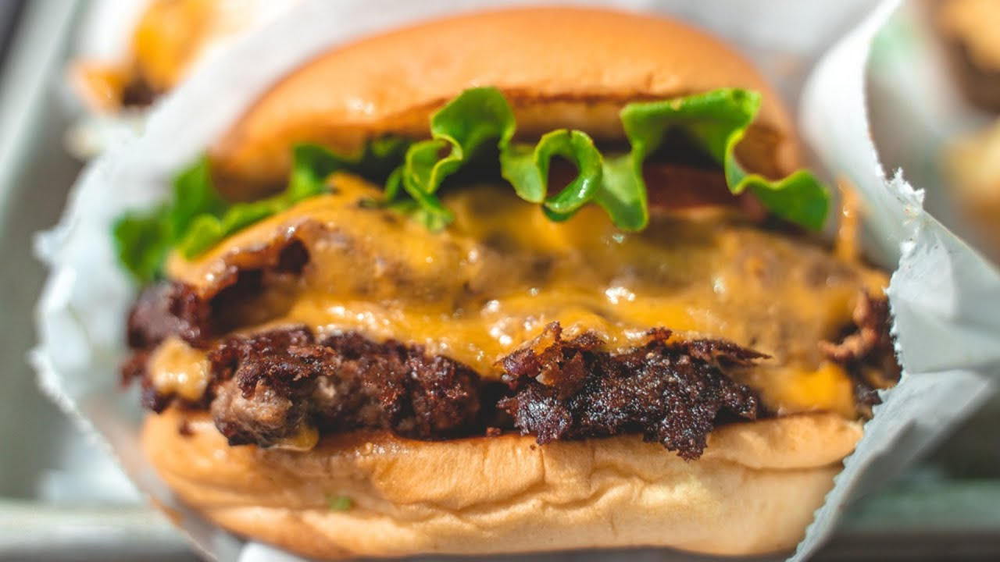

Tom's Top Shack Burger Recipe

Description
Is there ever a time when you're not in the mood for a good old Shackburger? Of course not! That's why you're in luck. Our Tom's Top Shack Burger Recipe is the best replica Shackburger you'll find anywhere.
We've personally completed hundreds of taste tastes to perfect the recipe, and by the time we had it, no one could tell the difference between ours and the original.
So give it a try, and enjoy a night IN at your very own casa de la Shake Shack!
Burger Ingredients
- 4 hamburger potato buns
- 4 tablespoons butter, melted
- 4 tablespoons shacksauce (*recipe below)
- 1 lb ground beef, very cold, divided into 4 pucks
- 1/2 teaspoon salt and pepper mix, (**recipe below)
- 4 slices american cheese
- 4 pieces green leaf lettuce
- 8 slices ripe plum tomato, 1/4 inch
*Sauce Ingredients
- 1/2 cup hellmann's real mayonnaise
- 1 tablespoon dijon mustard
- 3/4 teaspoon heinz ketchup
- 1/4 teaspoon kosher dill pickling brine
- 1 pinch cayenne pepper
**Salt and Pepper Mix
- 1/2 cup of kosher salt, and 1/2 teaspoon freshly ground pepper
Steps
- Heat a cast-iron griddle over medium-low heat until warm
- Open the hamburger buns, and brush the insides with melted butter (a soft brush is helpful here).
- Place the buns buttered side down on the griddle and toast until golden brown, 2 to 3 minutes.
- Transfer buns to a plate. Create the Shack sauce with the above-mentioned ingredients.
- Spoon the sauce onto the top bun.
- Increase the heat to medium and heat the griddle until hot, 2 to 3 minutes.
- Evenly sprinkle a pinch of Salt and Pepper Mix on top of each puck of meat.
- Place the pucks on the griddle, seasoned side down. Using a large, sturdy metal spatula, firmly smash each puck into a ⅓-inch-thick (8 mm) round patty. Pressing down on the spatula with another stiff spatula helps flatten the burger quickly. Evenly sprinkle another big pinch of Our Salt & Pepper Mix.
- Cook the burgers resisting the urge to move them, until the edges beneath are brown and crisp, and juices on the surface are bubbling hot, about 2 ½ minutes. Slide one of the spatulas beneath the burger to release it from the griddle and scrape up the caramelized browned crust. Use the other spatula to steady the burger and keep it from sliding.
- Flip the burgers Put the cheese on top and cook the burgers 1 minute longer for medium. Cook more or less depending on your preference.
- Add a piece of the lettuce and two slices of tomato. Transfer the cheeseburgers to the prepared buns.
- Enjoy!